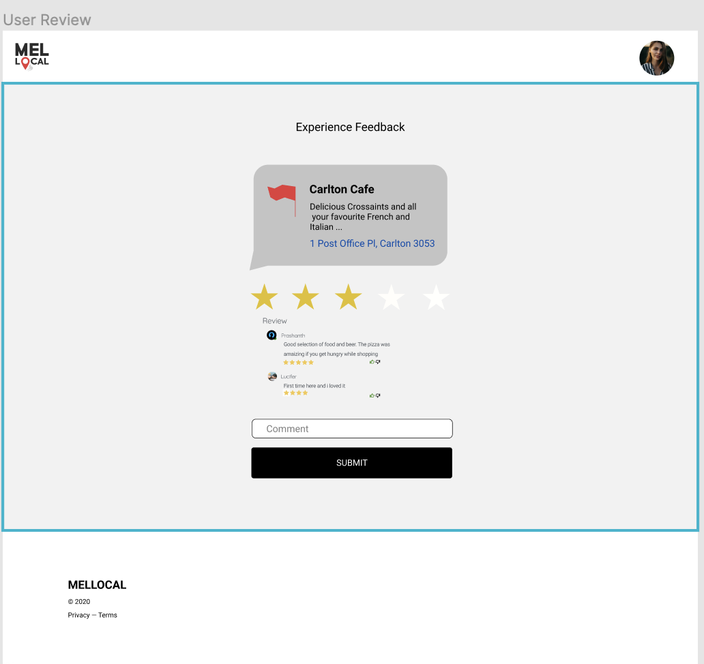

5 star rating system and a comment box has been given to the customers, so that they can use to rate and comment on their experience that they endured during their visit to this location. This will help to drag the customer attention towards the website. The system will display the review system in a seperate page linked to the product or services. Once the review is given by the customer, it will get updated to the database and some of the reviews will be displayed on the homepage to strengthen up the website.
1. Displays a webpage linked to the experienced product or service to leave the customer feedback

Consistency and Standards:
Review system is connected to all of the services and products. When a user experience a product or
service, he will be directed to the review page to place his feedback on that specific experience.
Flexibility and Efficency of Use:
A straignt forward design is been implemented for a easy of use environment. Customer has to give their
feedback and click submit button.
User Control and Freedom:
Displays Submit button for the customer to submit his/her feedback. A back button will be allocated for users to
go back to the previous page when they wanted.
Visibility of System Satus
User will be able to see the change when they apporach, where the change of color appears in the submit and
close button. And the user will be able see the confirmation message of the feedback.
Aesthetic and Minimalist Design
By displaying the details of the user visited in the review page makes the user more easier to absorb and give the
honest feedback on that specific location.